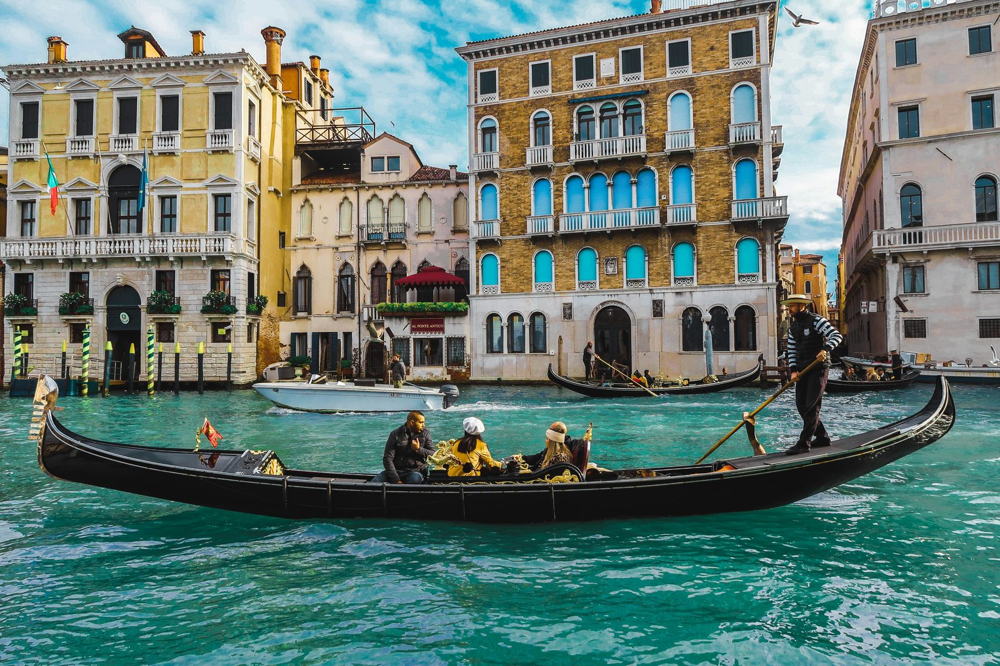

Discover the enchanting city of Venice! Learn about the new visitor ticket system effective in 2024, and explore top attractions like gondola rides, art galleries, and colorful festivals. Dive into Venetian culture with our expert guide on private Italian lessons and more.
Se stai pianificando una gita di un giorno a Venezia nel 2024, preparati a una novità: un biglietto di ingresso. In risposta alla crescente affluenza turistica, la città di Venezia ha introdotto un biglietto di ingresso di 5 euro, applicabile in 29 giornate specifiche durante l'anno, coincidenti con festività e periodi di massima affluenza.
Venezia, conosciuta come la "Serenissima", è una città unica costruita su un arcipelago di 118 piccole isole collegate tra loro da centinaia di ponti e separati da canali navigabili. Fondata più di 1.500 anni fa, Venezia è famosa per la sua ricca storia artistica e architettonica, i suoi musei di fama mondiale e i suoi pittoreschi canali. Ogni anno, questa gemma del patrimonio mondiale attira milioni di visitatori, con oltre 20 milioni di turisti registrati nel 2019, rendendola una delle destinazioni più amate in Europa.

Chi deve pagare il biglietto per entrare a Venezia?
Solo i visitatori giornalieri di età superiore ai 14 anni che entrano nella città usando qualsiasi mezzo di trasporto, dalle 8:30 alle 16:00 nelle giornate designate. E attenzione: chi non rispetta queste regole rischia una sanzione che varia dai 50 ai 300 euro, oltre al costo del biglietto.
Chi non deve pagare il biglietto per entrare a Venezia?
I residenti di Venezia e del Veneto, i minori di 14 anni, e i possessori della Carta europea della disabilità (con accompagnatori) non dovranno pagare. Anche chi pernotta a Venezia è esente, poiché già soggetto a una tassa di soggiorno.
Dove e come si acquista il biglietto per entrare a Venezia?
Il biglietto può essere acquistato online sul portale del Comune di Venezia. Dopo l'acquisto, riceverai un codice QR da presentare alle autorità in caso di controllo.
Quando e dove è necessario il biglietto per entrare a Venezia?
Il biglietto è richiesto per accedere alla città di Venezia e alle isole maggiori della laguna nei giorni specificati. Non è necessario per le isole minori come Murano e Burano o per attraversare zone come piazzale Roma o la Stazione Marittima senza entrare nella città antica.
L'iniziativa mira a regolare l'accesso dei visitatori giornalieri e a migliorare la vivibilità per residenti e lavoratori, facendo di Venezia un esempio per altre città che necessitano di protezione dal turismo di massa.
Questa misura, pur essendo al centro di dibattiti, rappresenta un passo importante verso la preservazione della Serenissima. Prima di pianificare la tua visita, verifica le date specifiche e assicurati di conformarti alle nuove regole per goderti appieno la magica atmosfera veneziana senza intoppi.
A Venezia, le possibilità di scoperta e divertimento sono praticamente infinite. Oltre a goderti una romantica gita in gondola lungo i suoi famosi canali, puoi esplorare capolavori artistici nella Basilica di San Marco o nel Palazzo Ducale. Per gli appassionati d'arte, una visita alla Gallerie dell'Accademia rivela tesori del Rinascimento, mentre il Museo Peggy Guggenheim offre una splendida collezione di arte moderna. Non perderti il vivace Carnevale di Venezia, conosciuto in tutto il mondo per le sue maschere elaborate e i festeggiamenti colorati. Inoltre, prenditi del tempo per scoprire le isole circostanti come Murano, famosa per la lavorazione del vetro, e Burano, noto per le sue case colorate e il merletto artigianale.
Ogni angolo di Venezia offre un'esperienza unica, perfetta per arricchire il tuo viaggio con autentiche avventure culturali italiane.
Con questi cambiamenti, Venezia si conferma non solo come meta imperdibile per i suoi canali e la sua storia, ma anche come città pioniera nella gestione sostenibile del turismo. Non perdere l'opportunità di esplorarla.
fonte: Come funziona il biglietto di ingresso per entrare a Venezia
Parole Chiave
| Bbiglietto | Carta che serve per entrare in un luogo o per viaggiare. |
| Ingresso | Entrata o il modo di entrare in un posto. |
| Giornate | Giorni, singoli periodi di tempo di 24 ore. |
| Affluenza | Molte persone che arrivano o sono presenti in un luogo. |
| Visitatori | Persone che vanno a vedere un posto, spesso per turismo. |
| Residenti | Persone che vivono in un certo luogo. |
| Portale | Sito web dove si possono fare cose come acquistare biglietti. |
| Codice QR | Un tipo di codice a barre che si può scansionare con un telefono. |
| Controlli | Azioni per verificare che tutto sia corretto, come vedere se hai un biglietto. |
| Esente | Non deve fare qualcosa, come pagare. |
| Tassa di soggiorno | Soldi che si pagano per dormire in un luogo diverso dalla propria casa. |
| Città antica | Parte vecchia e storica di una città. |
| Gita | Viaggio breve per divertimento. |
| Canali | Corsi d'acqua stretti in una città, specialmente a Venezia. |
| Gondola | Tipo di barca lunga e stretta usata a Venezia. |
| Isole | Pezzi di terra più piccoli circondati da acqua. |
| Vivibilità | Qualità di un luogo che lo rende piacevole per vivere. |
| Prenotazione | Azione di riservare qualcosa, come un biglietto, in anticipo. |
| Turismo di massa | Molte persone che visitano lo stesso posto nello stesso tempo. |
Esercizio
https://wordwall.net/play/73002/828/399
Domande
- In quali giorni i visitatori giornalieri devono pagare per entrare a Venezia?
- Chi non deve pagare il biglietto per entrare a Venezia?
- Dove si acquista il biglietto per entrare a Venezia?
- Cosa succede se si entra a Venezia senza biglietto?
- Perché è stato introdotto il biglietto d'ingresso a Venezia?